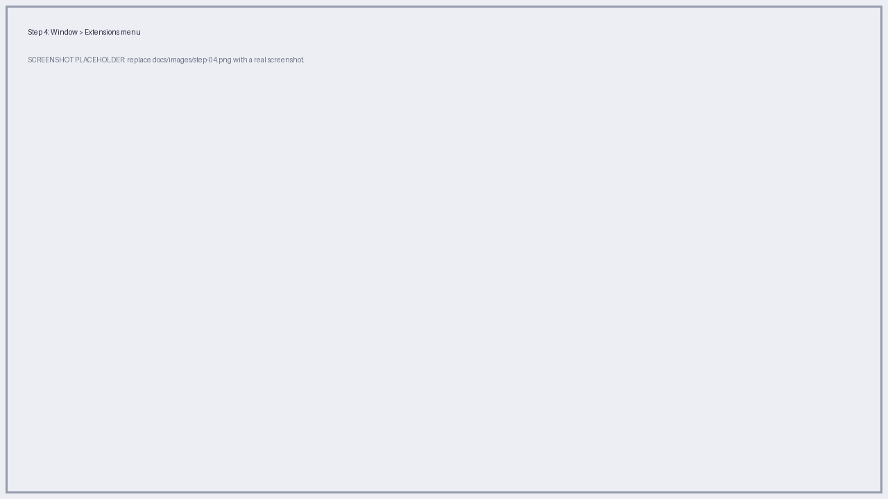
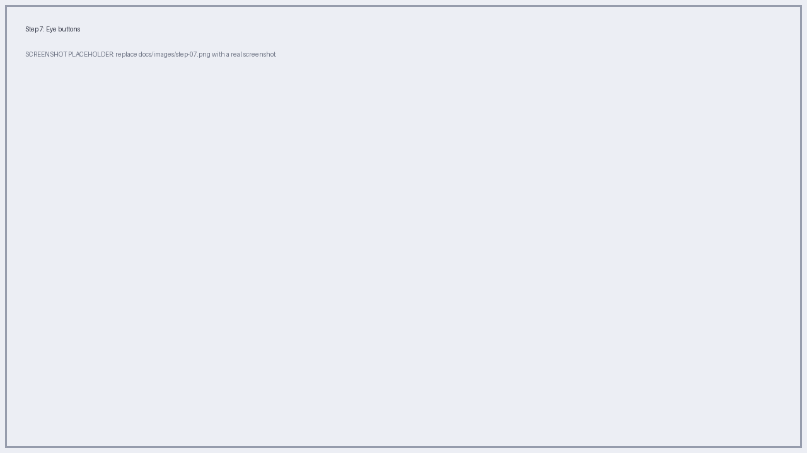
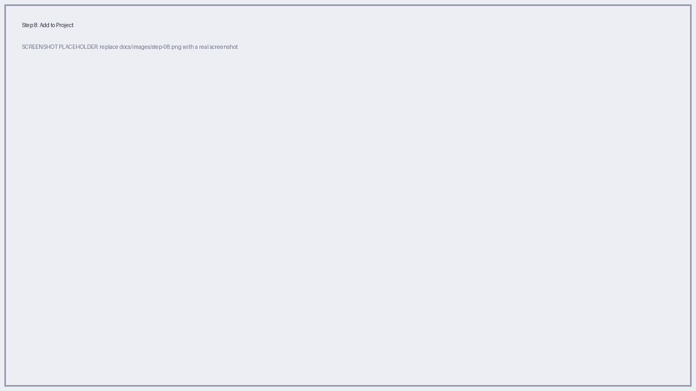
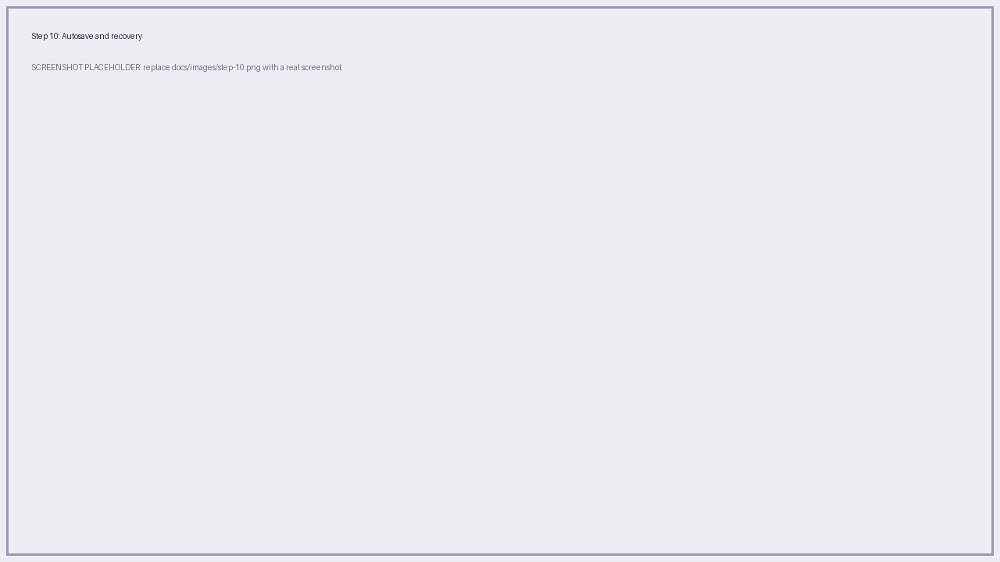
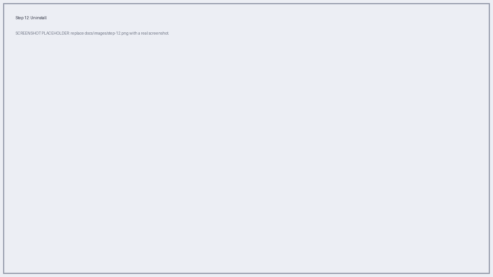

Voxy EasyAnimator: install and first steps
This guide takes about ten minutes. You do not need to use a terminal or install Python.
1. Check the requirements
Check each item. If one is missing, read the note.
- After Effects. Supported versions: After Effects 2022, After Effects 2023, After Effects 2024, After Effects 2025, After Effects 2026 (this list is not final)
- Windows 10 or Windows 11, 64-bit.
- An NVIDIA graphics card. Voxy is made for an NVIDIA RTX 3060 with 12 GB. Other NVIDIA cards work too, but big pictures may be slower.
- No NVIDIA card? Voxy still works. It uses a slower mode and shows a note about it.
- About 3 GB of free disk space.
- A recent NVIDIA driver. Voxy's upscaler needs it. Update it on NVIDIA's website if you are not sure.
2. Download the installer
- Open the official Voxy EasyAnimator download page.
- Press the Download button.
- Wait for the file
VoxyEasyAnimator-Setup.exeto finish downloading.
Only download Voxy from the official page.
3. Run the installer
- Close After Effects. The installer cannot copy its files while After Effects is open.
- Double-click
VoxyEasyAnimator-Setup.exe. - If Windows shows a blue window that says "Windows protected your PC", read the note in Windows shows a warning. Then press More info and Run anyway.
- License page. Read it. Choose I accept the agreement. Press Next.
- Folder page. Keep the suggested folder. Press Next.
- After Effects versions page. Keep the ticks on the versions you want. Press Next.
- Shortcuts page. Tick the desktop shortcut if you want one. Press Next.
- Press Install. Wait until it finishes.
- Checking your setup page. Read each line:
- OK means that part is ready.
- NOTE means Voxy works, with a small limit. For example: "Update your NVIDIA driver to use the fast mode. The slow mode will still work."
- FIX means something must be fixed first. The line says what to do.
- Press Finish.
4. Open the panel in After Effects
- Start After Effects.
- Open a project, or make a new one.
- Choose Window in the top menu.
- Choose Extensions.
- Choose Voxy EasyAnimator.
The panel opens. You can dock it like any other panel.

5. First run: the welcome and the sample
The first time you open the panel, it shows a short welcome with four steps:
- Pick a layer.
- Press Make Layers.
- Hide any parts you do not want with the eye buttons.
- Press Add to Project.
To see a result right away, press Try the sample character. The panel shows the sample cut into parts. The sample is only a preview. It does not change your project.
To check that everything works, press Test setup. Each line shows a green check when it is fine. If a line is not fine, it tells you what to do.
6. Make Layers on your own character
- Open a composition.
- Click your character layer in the timeline. Select just one layer.
- Look at the panel. It shows the layer's picture without you pressing anything.
- Press Make Layers.
- Wait. The panel cuts your character into parts. Nothing is added to your project yet.
Tips for the best result:
- Use a single character.
- Use flat colors and clean lines.
- Use a clean, plain background. A plain background gives the cleanest result.
- Keep the whole character in the picture, front view, arms away from the body.
The panel lists the parts under groups: Head, Face, Hair, Torso, Arms, Legs, and Hidden. Hidden holds the parts that were covered, such as an eye under a fringe. Voxy draws what was behind them.
If a part has nothing in it, Voxy leaves it out and tells you.
Background Removal. Turn this on before you press Make Layers. Voxy then also removes the background and redraws it as a separate layer.
7. Hide parts with the eye buttons
Every part has an eye button. Every group has one too.
- Press the eye next to a part to hide it.
- Press it again to show it.
- Press the eye next to the group name to hide or show the whole group.
- A half-open eye means some parts of the group are hidden.
The eyes only change the panel. They do not change your After Effects project or its timeline. Hidden parts are not added in the next step.
When you press Make Layers again, all eyes open again.
Hair. Choose the Hair group in the list. You can then press Cut hair into subdivisions. Pick how many sections you want and how smooth the cuts are. Press Combine to make the hair one part again.

8. Add to Project
- Check the parts. Hide the ones you do not want.
- Press Add to Project.
Voxy adds every visible part to your composition. Each group becomes its own precomposition, named after the group. Inside, each part is its own layer. Each layer is masked so only its part shows. The pivot of each layer sits at a joint, so rotations turn where a joint would.
Your original layer is not changed.
Add to Project is one undo step. Choose Edit > Undo to undo it.
To remove what the last Add to Project made, press Restore. Restore never removes layers you made or renamed yourself.
In Settings you can choose to keep each group in one composition with folders instead of precomposition. Folders keep every part in your own composition. That makes it easier to link parts across groups.

9. Upscale 2x
Upscale makes the picture of the selected layer twice as big.
- Click the layer in the timeline. It must be a still picture, such as a PNG or PSD layer.
- Press Upscale 2x.
- Wait. The panel shows the original and the bigger picture side by side.
- Nothing in your project has changed yet. Choose one:
- Press Apply in Project to use the bigger picture. The layer keeps its name, masks, position, and keyframes. The layer looks the same size as before.
- Press Discard to throw the bigger picture away. Your project stays exactly as it was.
Apply in Project is one undo step. Voxy keeps a copy of the bigger picture in a folder called Voxy Upscaled next to your project.
If your graphics card runs out of memory, tick Low memory mode and try again.
10. Save, autosave, and recovery
Save Project. Press Save Project. Voxy saves without asking questions. It then shows the time it saved. If the project has no name yet, After Effects asks you where to save it.
Autosave. While the panel is open, Voxy saves a backup copy on a timer. The default is every 5 minutes. Change it in the panel, or set it to 0 to turn it off. Backups go in a folder called Voxy Autosave next to your project. Voxy keeps the newest ten. An autosave never replaces your own saved project. If an autosave cannot finish, your saved project is untouched and the panel tells you.
After a crash
- Start After Effects again and open the Voxy panel.
- If After Effects closed by accident, the panel says so and offers your newest backup.
- Press Open the backup to get your work back. Your own project file is not changed.
- Press No thanks if you do not want it.

11. Troubleshooting
First press Test setup in the panel. It checks the most common problems and tells you what to do.
The panel does not appear
- Make sure you closed and restarted After Effects after installing.
- Check Window > Extensions in After Effects. Voxy EasyAnimator should be in the list.
- If it is not there, run the installer again. On the After Effects versions page, tick your version.
- If you installed an early test build, run the installer again and keep the option that lets After Effects open the panel.
The graphics card is not found
- Update your NVIDIA driver from NVIDIA's website. Restart your computer.
- Open the panel and press Test setup.
- If the card is still not found, Voxy keeps working in a slower mode. The panel shows a note while it does.
The preview is blank
- Click your layer in the timeline.
- Make sure the layer is visible at the current time. Move the time marker onto the layer.
- Press Refresh picture in the panel.
- If the layer is a precomposition, open it and select a layer inside.
No layer is selected
- Open the composition that holds your character.
- Click your character layer once. Select just one layer.
Voxy's helper program will not start
- Close the panel and open it again.
- Press Test setup.
- Restart After Effects.
- Run the installer again to repair Voxy EasyAnimator.
- Press Open log file in the panel. Send the file to support.
Windows shows a warning
Windows may show "Windows protected your PC" for a new program. If you downloaded the installer from the official page, it is safe to continue.
- Press More info.
- Press Run anyway.
Once the installer is signed with a certificate, the warning goes away.
Make Layers is slow
- Check that the panel does not show the "slow mode" note. If it does, update your NVIDIA driver.
- Close other programs that use the graphics card.
- Use a smaller layer.
- Cut one character at a time.
Make Layers did not work
- Use a picture with one character and a plain background.
- Press Make Layers again.
- If it keeps failing, press Open log file and send the file to support.
Voxy did not find a character
- Select the layer that shows your character.
- Make sure the character is not hidden or transparent at the current time.
The hair sections did not work
Your single Hair part is still there. Try fewer sections, or keep the single part.
Some of Voxy's files are missing
Run the installer again to repair Voxy EasyAnimator.
A part is missing after Add to Project
- Check the eye buttons. Hidden parts are not added.
- Check that the part is in the list. A part with nothing in it is left out, and the panel says so.
- Press Make Layers again, then Add to Project.
- If the composition changed size, press Make Layers again.
The project did not save
- Press Save Project again.
- Check that the folder is not read-only and the disk is not full.
- Use File > Save As to save to another place.
- If the panel says automatic backups were turned off, use File > Save As to pick your project file again.
Restore
Restore only undoes the last Add to Project. Press it again to undo the one before.
Upscale did not work
- Update your NVIDIA driver.
- Tick Low memory mode and try again.
- Use a smaller layer.
12. Uninstall
- Close After Effects.
- Open Settings > Apps in Windows.
- Choose Voxy EasyAnimator.
- Press Uninstall.
- The uninstaller asks if you also want to delete your Voxy settings and the backups of projects that were never saved. Choose No to keep them.
Backups that sit next to your own projects are never deleted.
